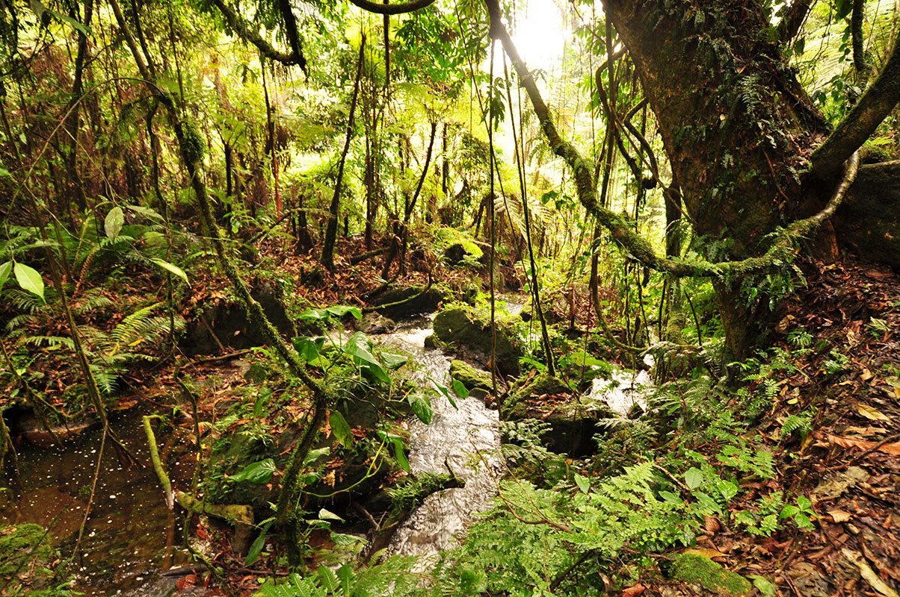
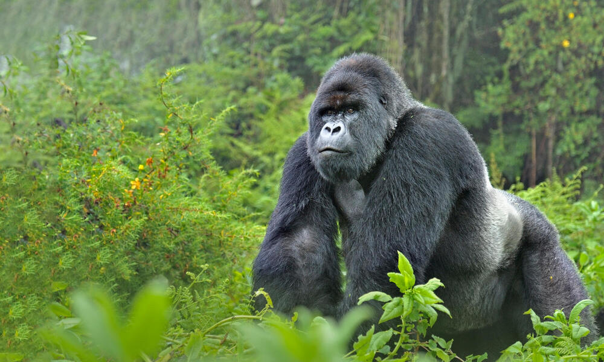

Gorilla trekking in Uganda offers an unforgettable adventure into the heart of Africa's wilderness. With lush forests, towering mountains, and the world’s largest population of mountain gorillas, Uganda provides a unique experience that attracts visitors from the USA, Europe, Australia, and beyond.
Experience the Thrill of Gorilla Trekking
Watch this video to get a glimpse of the majestic mountain gorillas in their natural habitat. These incredible primates share 98% of our DNA and exhibit fascinating social behaviors that will leave you in awe.
A Sneak Peek of the Gorilla Trekking Experience
Here’s what you can expect during your trek:
- Guided Hikes: Led by experienced rangers, the trek can take anywhere from 2 to 8 hours depending on the gorillas' location.
- Close Encounters: Spend up to an hour observing a gorilla family, including playful juveniles and commanding silverbacks.
- Scenic Trails: Immerse yourself in the lush greenery of Uganda’s rainforests, home to diverse flora and fauna.



Why Choose Uganda for Gorilla Trekking?
Uganda is home to over half of the world’s mountain gorilla population. Its premier gorilla trekking destinations include:
- Bwindi Impenetrable Forest: A UNESCO World Heritage Site known for its biodiversity and dense greenery.
- Mgahinga Gorilla National Park: A stunning park located at the intersection of Uganda, Rwanda, and Congo.
Embarking on a gorilla trekking adventure in Uganda is a truly unforgettable experience. Imagine hiking through the lush rainforests of Bwindi Impenetrable National Park, surrounded by breathtaking scenery, as you track the world's last remaining mountain gorillas in their natural habitat. This unique opportunity not only offers a thrilling and physically rewarding journey but also supports crucial conservation efforts to protect these magnificent creatures.
Your adventure will be enriched by encounters with local communities, offering a chance to immerse yourself in Uganda's rich cultural tapestry. It's an extraordinary journey that promises to leave you with lasting memories, stunning photographs, and a deeper appreciation for wildlife and nature. Don't miss out on the chance to be part of something truly special!
Best Time to Visit
The optimal time for trekking in Uganda falls during the dry seasons, which span from June to September and December to February. During these months, the trails remain less muddy, providing easier navigation, and the weather conditions are ideal for venturing into Uganda's verdant forests. It’s the perfect period to fully immerse yourself in the breathtaking natural beauty and enjoy a more comfortable trekking experience.
What You Need to Know
- Permits: A gorilla trekking permit costs $700 for foreign non-residents. Book well in advance as permits are limited.
- Packing Tips: Bring sturdy hiking boots, waterproof clothing, insect repellent, and a good camera (no flash).
- Fitness Level: Moderate physical fitness is required to navigate the hilly terrain.
Plan Your Adventure with JK Travel Trails
At JK Travel Trails, we provide tailored gorilla trekking packages that include permits, accommodation, transportation, and guided tours. Whether you’re traveling solo or with a group, we’ll ensure your experience is seamless and unforgettable.
Contact us today to start planning your dream gorilla trekking adventure in Uganda.
Return to our Main Webpage for more travel inspiration and packages.